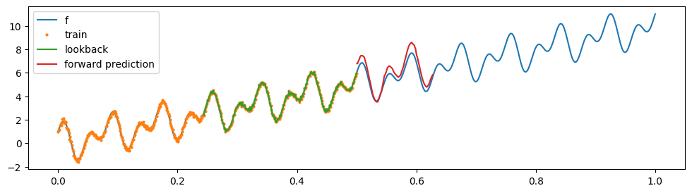
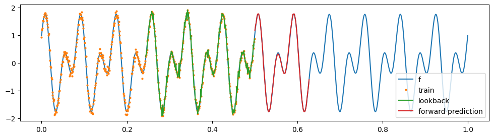
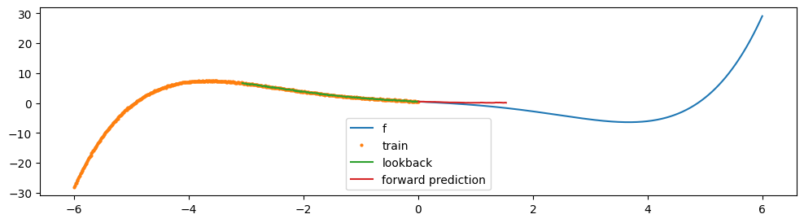

import os
os.environ["CUDA_VISIBLE_DEVICES"] = "3"
import numpy as np
import torch
import torch.nn as nn
import torch.nn.functional as F
from tqdm import tqdm
import matplotlib.pyplot as plt
# set gpu as default device
torch.set_default_device("cuda")Models
class RidgeRegressor(nn.Module):
def __init__(self, noise_variance: float = 0.0):
super().__init__()
self.noise_variance = noise_variance
def forward(self, X, y):
n_samples, n_dim = X.shape
ones = torch.ones(n_samples, 1, device=X.device)
X = torch.concat([X, ones], dim=-1) # add bias
if n_samples >= n_dim:
# standard
A = X.T@X
A.diagonal().add_(self.noise_variance)
B = X.T@y
weights = torch.linalg.solve(A, B)
else:
# Woodbury
A = X@X.T
A.diagonal().add_(self.noise_variance)
weights = X.T@torch.linalg.solve(A, y)
w = weights[:-1].reshape(-1, 1)
b = weights[-1].reshape(1, 1)
return w, b # (n_dim, 1), (1, 1)
class SIREN(nn.Module):
def __init__(self, input_dim: int, output_dim: int, layers: list, activation_scale: float, dropout: float):
super().__init__()
self.activation_scale = activation_scale
self.dropout = dropout
self.input_layer = nn.Linear(input_dim, layers[0])
self.layers = nn.ModuleList([nn.Linear(layers[i], layers[i+1]) for i in range(len(layers)-1)])
self.output_layer = nn.Linear(layers[-1], output_dim)
def forward(self, x):
out = self.input_layer(x)
out = torch.sin(self.activation_scale * out)
for layer in self.layers:
out = layer(out)
out = torch.sin(self.activation_scale * out)
out = F.dropout(out, p=self.dropout, training=self.training)
out = self.output_layer(out)
return out
def get_initialized_model(input_dim, output_dim, layers, activation_scale, dropout):
def first_layer_init(m):
if hasattr(m, 'weight'):
input_size = m.weight.size(-1)
m.weight.uniform_(-1 / input_size, 1 / input_size)
def other_layer_init(m):
if hasattr(m, 'weight'):
input_size = m.weight.size(-1)
m.weight.uniform_(-np.sqrt(6 / input_size) / activation_scale, np.sqrt(6 / input_size) / activation_scale)
model = SIREN(input_dim, output_dim, layers, activation_scale, dropout)
with torch.no_grad():
model.input_layer.apply(first_layer_init)
model.layers.apply(other_layer_init)
model.output_layer.apply(other_layer_init)
return modelData generation
N = 1000
x = torch.linspace(0, 1, N).reshape(-1, 1)
f = lambda x: torch.exp(-(torch.sin(48 * np.pi * x) + torch.cos(24 * np.pi * x) + 10*x)/10)
# f = lambda x: x ** 2
# f = lambda x: torch.log(x)
# a non-smooth degree 5 polynomial function
# f = lambda x: 0.01 * x ** 5 - 0.2 * x ** 3 - x + 0.5
x_train = x[:N//2]
noise_std = 0.01
y_train = f(x_train) + noise_std * torch.randn(N//2, 1)
x_test = x[N//2:]
plt.figure(figsize=(12, 3))
plt.plot(x.cpu(), f(x).cpu(), label='f');
plt.plot(x_train.cpu(), y_train.cpu(), 'o', label='train', markersize=2);
plt.legend();
Data sequence preperation
lookback_window = 128
lookahead_window = 128
y_lookback = []
y_lookahead = []
for i in range(lookback_window, len(x_train)-lookahead_window+1):
y_lookback.append(y_train[i-lookback_window:i][np.newaxis, ...])
y_lookahead.append(y_train[i:i+lookahead_window][np.newaxis, ...])
y_lookback = torch.cat(y_lookback, dim=0)
y_lookahead = torch.cat(y_lookahead, dim=0)
print(f"{y_lookback.shape=}, \n{y_lookahead.shape=}") # [N, lookback_window, 1], [N, lookahead_window, 1]y_lookback.shape=torch.Size([245, 128, 1]),
y_lookahead.shape=torch.Size([245, 128, 1])Training
siren = get_initialized_model(1, 16, [256, 256], 30.0, 0.0)
ridge_reg = RidgeRegressor(noise_variance=1e-4)
def one_example_forward_pass(y_input, mode): # y_input: (lookback_window, 1), y_output: (lookahead_window, 1)
if mode == "train":
siren.train()
ridge_reg.train()
else:
siren.eval()
ridge_reg.eval()
coords = torch.linspace(0, 1, lookback_window+lookahead_window).reshape(-1, 1)
time_repr = siren(coords)
lookback_repr = time_repr[:lookback_window]
lookahead_repr = time_repr[-lookahead_window:]
w, b = ridge_reg(lookback_repr, y_input)
y_pred = lookahead_repr@w + b
return y_pred
forward_pass = torch.vmap(one_example_forward_pass, in_dims=(0, None), out_dims=0, randomness="different")
optimizer = torch.optim.Adam(siren.parameters(), lr=1e-3)
epochs = 500
pbar = tqdm(range(epochs))
losses = []
for i in pbar:
optimizer.zero_grad()
y_lookahead_pred = forward_pass(y_lookback, "train")
loss = F.mse_loss(y_lookahead_pred, y_lookahead)
loss.backward()
optimizer.step()
pbar.set_description(f'Loss: {loss.item():.4f}')
losses.append(loss.item())
plt.plot(losses)Loss: 0.0001: 100%|██████████| 500/500 [00:02<00:00, 212.82it/s]
Testing
print(x_train.shape, y_train.shape, x.shape)
with torch.no_grad():
y_pred = one_example_forward_pass(y_train[-lookback_window:], mode="test")
print(y_pred.shape)
plt.figure(figsize=(12, 3))
plt.plot(x.cpu(), f(x).cpu(), label='f');
plt.plot(x_train.cpu(), y_train.cpu(), 'o', label='train', markersize=2);
plt.plot(x_train[-lookback_window:].cpu(), y_train[-lookback_window:].cpu(), label='lookback');
plt.plot(x_test.cpu()[:lookahead_window], y_pred.cpu(), label='forward prediction');
plt.legend();torch.Size([500, 1]) torch.Size([500, 1]) torch.Size([1000, 1])
torch.Size([128, 1])
Appendix



